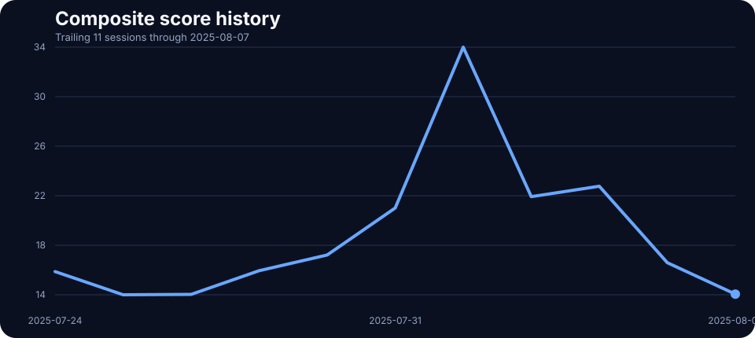
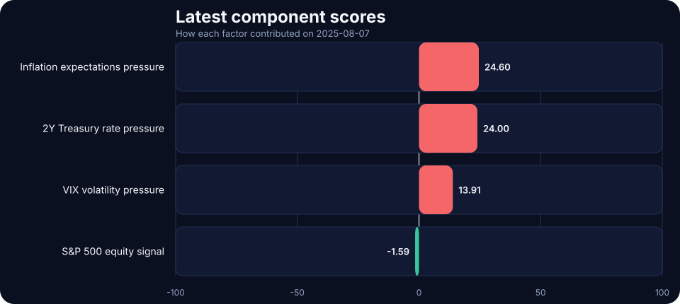

2025-08-07 TACO Pressure Index Update: Low at 14.43
The daily signal helps separate noise from persistent multi-factor stress. On 2025-08-07, the score printed 14.43/100 in the low regime, with inflation expectations and front-end rate pressure doing most of the work.
Daily pressure check for 2025-08-07: the TACO Pressure Index closed at 14.43/100, signaling a low pressure regime as inflation expectations and front-end rate pressure shaped the daily read. Explore the score history, daily post, and the four-factor dashboard.
Pressure history

Latest component scores

Today’s component breakdown
Inflation expectations pressure
24.60/100
Inflation pressure reflects both the breakeven level and any fresh 5-session rise.
2Y Treasury rate pressure
19.20/100
Rates pressure reflects both the current 2Y level and any fresh 5-session rise.
VIX volatility pressure
13.91/100
Higher implied volatility usually means greater market stress.
S&P 500 equity pressure
0.00/100
Bigger equity drawdowns imply more stress.
Method in one paragraph
The TACO Pressure Index converts four live market inputs into 0–100 pressure scores and averages them into a composite reading. Equity pressure still comes from 5-session S&P 500 drawdowns, while rates, inflation, and volatility now combine a level component with a 5-session change component. That keeps the index focused on pressure, not just short-term momentum, before grouping the result into LOW, ELEVATED, HIGH, and EXTREME regimes.